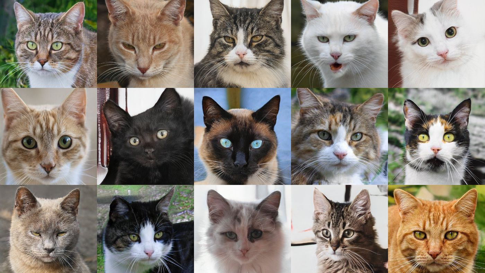

The Cats is similar in anatomy to the other felid species: it has a strong flexible body, quick reflexes, sharp teeth and retractable claws adapted to killing small prey. Its night vision and sense of smell are well developed. Cats communication includes vocalizations like meowing , purring, trilling, hissing, growling and grunting as well as Cats-specific body language. A predator that is most active at dawn and dusk (crepuscular), the Cats is a solitary hunter but a social species. It can hear sounds too faint or too high in frequency for human ears, such as those made by mice and other small mammals. [7] It secretes and perceives pheromones.[8]
